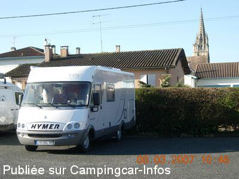
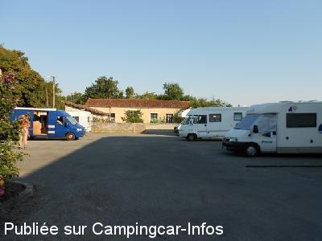
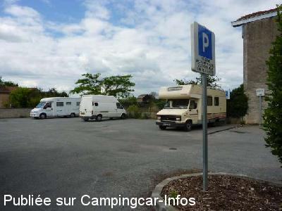
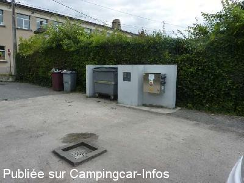

ASN = Aire de services avec stationnement nuit possible de :
CADILLAC
(N° 341)
Accès/adresse :
Allée du Parc
33410 CADILLAC
33410 CADILLAC
Latitude : (Nord) 44.6385° Décimaux ou 44° 38′ 18′′
Longitude : (Ouest) -0.31707° Décimaux ou 0° 19′ 1′′
Tarif : 2012
Stationnement et services : gratuit
Électricité : 2 €/3H
Type de borne : Artisanale
Services :


Poubelles
WC publics au bout de la rue et sous la Halle
Marché régional le samedi matin
Tous commerces Une laverie automatique 24/24 est installée à l'Intermarché de Béguey CC du Pin sur la D10 à 2 km
Autres informations :
Ouvert toute l'année
Emplacement pour 8 CC sur sol plat goudronné, sans ombre
Stationnement limité à 3 nuits
1 seul robinet
Accès très difficile le samedi matin à cause du marché
Eau coupée en période de gel .
http://www.mairiedecadillac.com/BIENVENUE_CADILLAC/CADILLAC_ACCUEIL/accueil.htm

Le 03/01/2014 par DIDI 31

Le 26/09/2011 par bil Août 2011

Le 21/06/2010 par Fanfan

Le 21/06/2010 par Fanfan
de
albri64
le 05/10/2013 :
§ 25/09/2013 Cadillac
Aire sur parking centre ville, gratuit. 10 places environ
Vidange, cassette wc + 1 robinet eau
2€ pour 3h électricité
Bruyant par le passage des voitures, en face d'une école
§ 25/09/2013 Cadillac
Aire sur parking centre ville, gratuit. 10 places environ
Vidange, cassette wc + 1 robinet eau
2€ pour 3h électricité
Bruyant par le passage des voitures, en face d'une école
de
viviane
le 27/05/2012 :
Passer 3 nuits, calme, beau marché le samedi. Belles balades a faire, gens très accueillant.
Passer 3 nuits, calme, beau marché le samedi. Belles balades a faire, gens très accueillant.
de
HERVE
le 25/03/2012 :
borne électrique condamnée suite aux vandalismes (affiche du maire) vidange grise très difficile,un seul robinet pour nettoyage cassette et remplissage
borne électrique condamnée suite aux vandalismes (affiche du maire) vidange grise très difficile,un seul robinet pour nettoyage cassette et remplissage
de
bil
le 27/09/2011 :
Avons passé la nuit du 16 Août, nuit calme, pour les services n'avons pas pris d'eau car un seul robinet pour le rinçage des WC et l'eau !
Avons passé la nuit du 16 Août, nuit calme, pour les services n'avons pas pris d'eau car un seul robinet pour le rinçage des WC et l'eau !
de
ocral J
le 28/07/2011 :
le 26/07/2011 Nous y avons passés la nuit , rien de plus à rajouter sauf que l'aire est pour 8 à 9 camping car maximum si tout le monde reste logique.
Village agréable à visiter.
le 26/07/2011 Nous y avons passés la nuit , rien de plus à rajouter sauf que l'aire est pour 8 à 9 camping car maximum si tout le monde reste logique.
Village agréable à visiter.
de
J. P. Bedouet
le 18/06/2011 :
Pour vidanger les eaux usées, il faut viser juste ! Un seul robinet pour l'eau et le rinçage des cassettes.
Proximité du centre-ville, c'est toujours appréciable. Quartier calme après la sortie des classes situées à l'entrée du parking, ce qui explique son occupation un peu anarchique à certaines heures.
Pour vidanger les eaux usées, il faut viser juste ! Un seul robinet pour l'eau et le rinçage des cassettes.
Proximité du centre-ville, c'est toujours appréciable. Quartier calme après la sortie des classes situées à l'entrée du parking, ce qui explique son occupation un peu anarchique à certaines heures.
de
bobjackie
le 12/03/2011 :
Cette aire occupe la moitié d'un parking public et faute de place en journée des voitures y stationnent souvent, mais pas la nuit. Il faut toutefois ne pas arriver trop tard car l'occupation se fait en fonction des disponibilités en journée, mais les places libérés par les voitures le soir se révèlent ensuite trop étroites, sans compter comme toujours ceux qui prennent leurs aises à 2 mètres du voisin...
Cette aire occupe la moitié d'un parking public et faute de place en journée des voitures y stationnent souvent, mais pas la nuit. Il faut toutefois ne pas arriver trop tard car l'occupation se fait en fonction des disponibilités en journée, mais les places libérés par les voitures le soir se révèlent ensuite trop étroites, sans compter comme toujours ceux qui prennent leurs aises à 2 mètres du voisin...
de
lavoir du chateau
le 02/09/2010 :
Une laverie existe depuis 2007 à Cadillac, rue du pont, entre la place de la République et la departementale 10, le service est assuré le lundi de 14h à 19h et de 8h à 19h du mardi au samedi inclus. Nous nous occupons de votre linge. Si vous desirez vous promener et visiter la ville et ses environs, nous vous invitons à prendre le café avec nous tous les matins à 10h, c'est avec plaisir que Françoise et Christian vous recevront.
Une laverie existe depuis 2007 à Cadillac, rue du pont, entre la place de la République et la departementale 10, le service est assuré le lundi de 14h à 19h et de 8h à 19h du mardi au samedi inclus. Nous nous occupons de votre linge. Si vous desirez vous promener et visiter la ville et ses environs, nous vous invitons à prendre le café avec nous tous les matins à 10h, c'est avec plaisir que Françoise et Christian vous recevront.
de
Fraysse
le 16/11/2009 :
Je confirme aire assez mal indiquée mais très bien placée et calme la nuit. De plus, magnifique village à voir et aussi un bon boucher avec de la viande extra et a un prix raisonable (Xavier MARTIN - TRAITEUR, (adresse : 3 place de la République) ainsi qu'un bon boulanger sur cette place. Nous y reviendrons.
Je confirme aire assez mal indiquée mais très bien placée et calme la nuit. De plus, magnifique village à voir et aussi un bon boucher avec de la viande extra et a un prix raisonable (Xavier MARTIN - TRAITEUR, (adresse : 3 place de la République) ainsi qu'un bon boulanger sur cette place. Nous y reviendrons.
de
MIMI
le 23/09/2009 :
Nous nous sommes arrêtés dans ce charmant village, comme dans beaucoup d'endroits les panneaux sont mal indiqués. Merci GPS. Aire bien entretenue, calme près des commerces, à retenir !!
Nous nous sommes arrêtés dans ce charmant village, comme dans beaucoup d'endroits les panneaux sont mal indiqués. Merci GPS. Aire bien entretenue, calme près des commerces, à retenir !!
de
andsyl
le 06/06/2009 :
Borne électrique hors service. Ne pas arriver aux horaires entrées et sorties scolaires, encombrement de voitures... Sinon, aire bien située et calme, proche tous commerces et même une laverie...
Borne électrique hors service. Ne pas arriver aux horaires entrées et sorties scolaires, encombrement de voitures... Sinon, aire bien située et calme, proche tous commerces et même une laverie...
de
soisik
le 15/12/2006 :
Aire super sympa, pas facile à trouver car les panneaux indicateurs ne sont pas bien placés. Attention Marché samedi matin et les voitures sont autorisées à se garer sur le côté opposé à la borne.
(il y a des WC publics situés sous la Halle à 300 mètres environ). Un super magasin (style quincaillerie) situé juste avant le dernier virage derrière l'église. Les Ccistes sont super bien accueillis.Petite ville dans une région extra, c'est normal, notre maison est dans le village d'à côté.
Aire super sympa, pas facile à trouver car les panneaux indicateurs ne sont pas bien placés. Attention Marché samedi matin et les voitures sont autorisées à se garer sur le côté opposé à la borne.
(il y a des WC publics situés sous la Halle à 300 mètres environ). Un super magasin (style quincaillerie) situé juste avant le dernier virage derrière l'église. Les Ccistes sont super bien accueillis.Petite ville dans une région extra, c'est normal, notre maison est dans le village d'à côté.